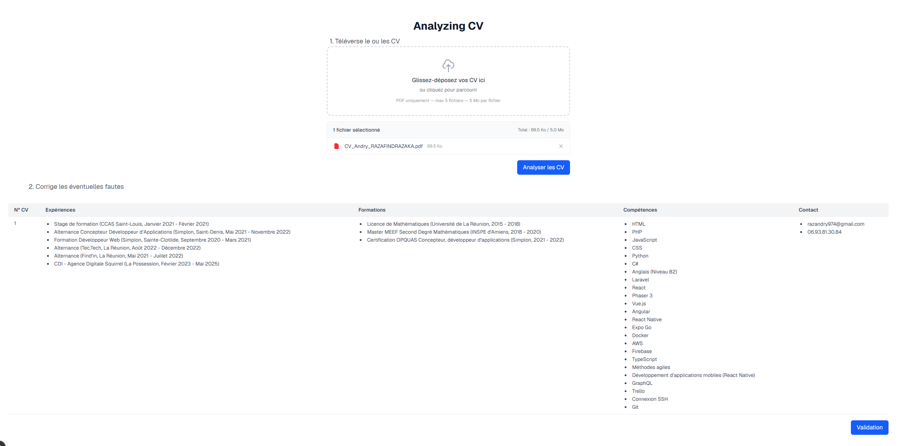
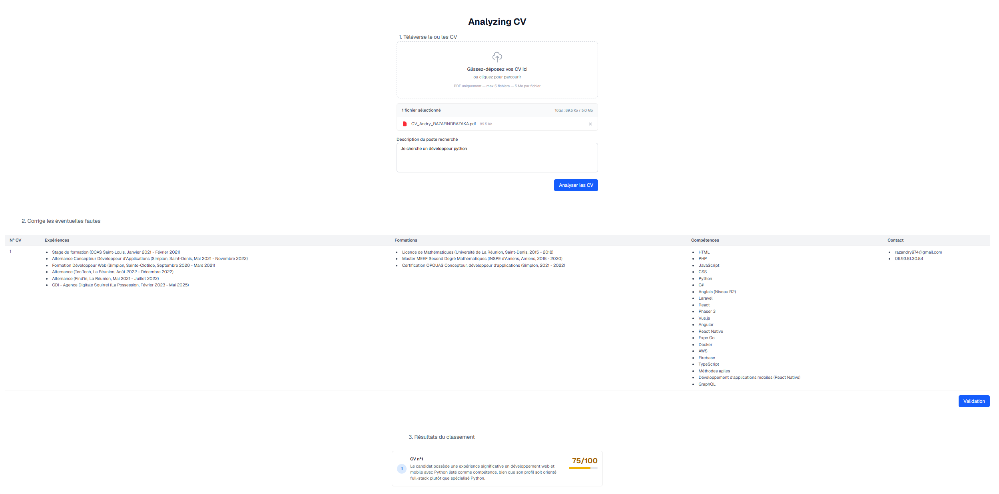
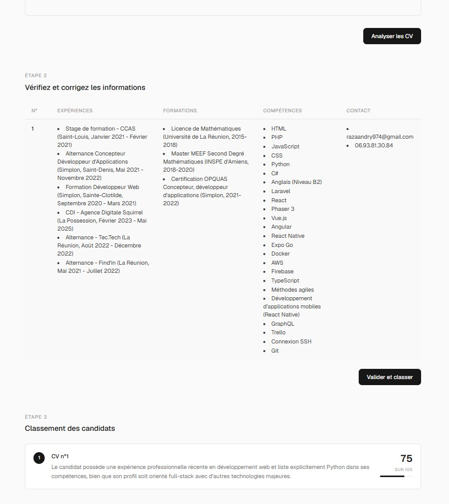
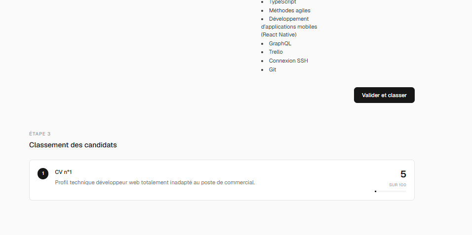

Le défi est de construire un outil capable d'analyser plusieurs CV simultanément (j'ai fixé la limite à 5 pour commencer), d'extraire les données clés (expériences, formations, compétences, contact), de permettre une correction humaine si besoin, puis de classer les CV par pertinence par rapport à une offre d'emploi.
Le tout en m'appuyant sur un LLM local (LM Studio avec Qwen 3.6) pour ne pas dépendre d'une API externe et garder le contrôle total sur les données.
I - Upload, extraction et analyse des CV
La première étape est la plus critique : transformer un PDF en données exploitables. J'ai choisi de découper le processus en trois étapes visibles pour l'utilisateur. Pourquoi ? Parce que je voulais garder un contrôle total sur le flux et donner à l'utilisateur la possibilité de corriger les erreurs de l'IA avant le classement final.
L'utilisateur upload ses CV (max 5, PDF uniquement, 5 Mo par fichier). Le backend NestJS récupère les fichiers, les stocke temporairement, et utilise pdf-parse pour en extraire le texte brut. Ce texte est ensuite envoyé au LLM local via une API REST, avec un prompt très strict demandant un retour JSON propre.
Le prompt est rodé pour forcer le modèle à retourner des strings simples (pas d'objets imbriqués) avec des puces et des sauts de ligne. C'était un vrai défi : les modèles locaux ont tendance à inventer des structures JSON complexes ou à mal formatter leur réponse. Il a fallu itérer plusieurs fois pour obtenir un résultat stable.
Une fois les données extraites, l'utilisateur passe à l'étape 2.

II - Correction et validation par l'utilisateur
C'est l'étape que je considère comme la plus importante. L'IA fait du mieux qu'elle peut, mais elle peut se tromper — surtout avec des PDF mal formatés ou des CV atypiques. Plutôt que de faire confiance aveuglément au modèle, je préfère donner le contrôle à l'utilisateur.
Les données extraites s'affichent dans un tableau éditable : expériences, formations, compétences, contact. Chaque cellule est cliquable et se transforme en textarea aux dimensions exactes de la cellule, pour une édition fluide sans rupture visuelle. Les listes s'affichent sous forme de puces, et l'utilisateur peut modifier directement le contenu.
Cette étape de validation est essentielle : elle garantit que le classement final se fera sur des données fiables. Une fois l'utilisateur satisfait, il clique sur "Valider et classer". Les données corrigées (hors colonne contact, qui n'est pas pertinente pour le scoring) sont envoyées au LLM pour analyse et classement.

III - Classement intelligent des candidats
Voici le cœur du projet. Le LLM reçoit l'intégralité des CVs validés plus la description du poste saisie par l'utilisateur à l'étape 1. Sa mission : attribuer un score sur 100 à chaque candidat et justifier son évaluation en une phrase.
Le prompt est conçu pour que le modèle compare chaque profil aux critères du poste de manière structurée. Il retourne un tableau JSON trié du meilleur score au plus faible. Le frontend affiche ensuite le classement sous forme de cartes épurées : position, identifiant du CV, justification, score visuel avec une barre de progression.
Le résultat est surprenant de pertinence. Même avec un modèle local, le classement reflète bien la correspondance entre les compétences demandées et celles présentes sur le CV. Le score donne une indication chiffrée utile, et la justification permet de comprendre rapidement pourquoi un profil ressort plus qu'un autre.
IV - Design sobre et simpliste
Au départ, le design était fonctionnel mais quelconque. J'ai voulu quelque chose de plus travaillé, sans pour autant tomber dans le superflu. Je me suis appuyé sur une skill d'agent (skills.sh) pour obtenir une direction design claire : un thème sobre en teintes de noir, gris et blanc, sans gradient, sans couleurs criardes.
Le résultat est épuré : fond gris très clair, typographie serrée, bordures fines, boutons noirs, barres de progression noires. L'interface respire. Chaque étape est clairement identifiée avec un label discret. L'expérience utilisateur est fluide et professionnelle.


Conclusion
Ce projet de 4 heures m'a montré à quel point un LLM local peut être puissant pour des tâches structurées, à condition de bien guider le prompt et de garder l'humain dans la boucle. L'architecture en trois étapes — extraction, correction, classement — est volontaire : elle donne du contrôle à l'utilisateur et limite les erreurs de l'IA.
Techniquement, le stack est simple mais efficace : Next.js pour le front, NestJS pour l'API, pdf-parse pour l'extraction, et LM Studio avec Qwen 3.6 pour l'analyse IA. Rien d'exotique, mais une orchestration qui fait le job.
Les axes d'amélioration sont déjà clairs :
- Analyse plus intelligente : faire poser des questions de clarification par l'IA si le prompt du poste est trop vague, ou si des informations manquent sur le CV.
- Plus de réflexion sur les colonnes : enrichir les données extraites (langues, certifications, soft skills) pour un scoring plus fin.
- Mode direct : option pour sauter l'étape 2 et afficher le classement immédiatement, pour les utilisateurs pressés.
- Authentification et crédits : un système de compte avec crédits pour analyser des centaines de CV en simultané, avec un modèle de monétisation.
- Sauvegarde et partage : persistance des classements, export PDF, envoi par email des résultats.
Ce projet prouve qu'on peut construire des outils IA utiles et utilisables en très peu de temps, à condition de bien découper le problème et de garder l'utilisateur au centre de l'expérience.